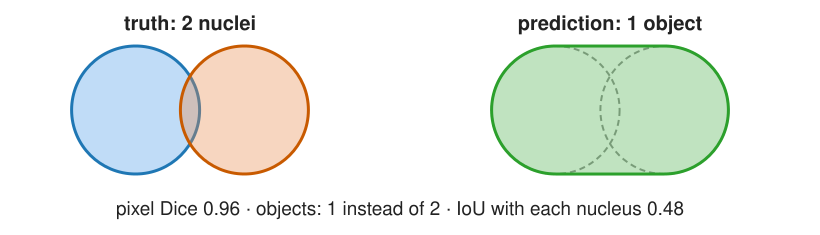
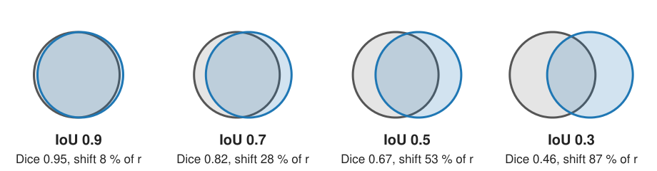
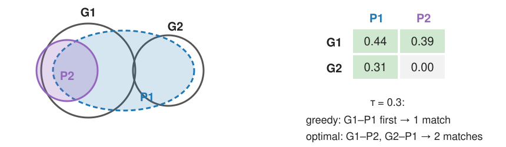
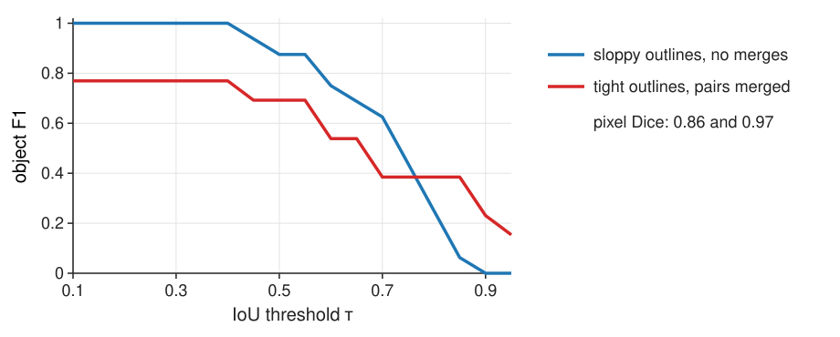
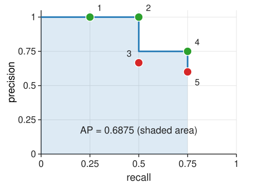

A segmentation is usually used to count and measure objects. Pixel scores (the thresholding day) do not see objects. Today we score objects:
Slides titled The math give the formulas and proofs; the ideas are complete without them.
From the thresholding day: compare a predicted mask with the true mask pixel by pixel. TP, FP, FN pixels; Dice = 2\,TP/(2\,TP + FP + FN), IoU (Jaccard) = TP/(TP + FP + FN).

Two touching nuclei predicted as one object: almost every pixel is right (Dice 0.96), but the count is 1 instead of 2, and the area of “the nucleus” is doubled. We have to decide which predicted object is which true object.
The intersection over union of a true object G and a predicted object P: the overlap divided by the area covered by either.

For pixel sets A (truth) and B (prediction):
\text{IoU}(A, B) = \frac{|A \cap B|}{|A \cup B|}, \qquad \text{Dice}(A, B) = \frac{2|A \cap B|}{|A| + |B|}.
With |A \cup B| = |A| + |B| - |A \cap B|, writing J for IoU and D for Dice:
D = \frac{2J}{1 + J}, \qquad J = \frac{D}{2 - D}.
Both are monotone in each other, so they rank results the same way; IoU is the stricter number (IoU 0.5 ⇔ Dice 0.67, IoU 0.9 ⇔ Dice 0.95).
Disc of radius r shifted by d: |A \cap B| = 2r^2\arccos\frac{d}{2r} - \frac d2\sqrt{4r^2 - d^2}. For d \ll r the overlap loses about 2rd and the union gains 2rd, so IoU \approx 1 - \frac{4d}{\pi r}: the loss per pixel of shift scales with 1/r.
Choose an IoU threshold \tau (often 0.5). A true object and a predicted object may be matched only if their IoU \ge \tau, and every object takes at most one partner.
There are no true-negative objects: the background is not made of objects. So no “accuracy” and no ROC curve for objects.
Rows: true objects, columns: predicted objects; most entries are 0 (objects far apart do not overlap).
| P1 | P2 | P3 | P4 | |
|---|---|---|---|---|
| G1 | 0.82 | 0.05 | 0 | 0 |
| G2 | 0.10 | 0.45 | 0.38 | 0 |
| G3 | 0 | 0 | 0 | 0.62 |
At \tau = 0.5: TP 2 (G1–P1, G3–P4), FP 2 (P2, P3), FN 1 (G2). G2 is split into P2 and P3: neither half is good enough.
Above \tau = 0.5 there is nothing to choose: every object has at most one partner with IoU above 0.5, so “take every pair with IoU > 0.5” is the matching.
Claim. If B_1 \cap B_2 = \emptyset, then IoU(A, B_1) > \frac12 and IoU(A, B_2) > \frac12 cannot both hold.
Proof. IoU(A, B) > \frac12 means |A \cap B| > \frac12|A \cup B| \ge \frac12|A|. Two disjoint predictions would cover more than \frac12|A| + \frac12|A| = |A| pixels of A: impossible. \square
The same holds with the roles of truth and prediction swapped (true objects do not overlap either). So for \tau > \frac12 each row and each column of the IoU table has at most one entry \ge \tau, and the matching is unique.
At exactly \frac12 it fails: A cut into two equal halves B_1, B_2 gives IoU \frac12 with both.

Unknowns x_{ij} \in \{0, 1\}: true object i is matched to prediction j. Weights
M_{ij} = \begin{cases} 1 + \varepsilon\,\text{IoU}_{ij} & \text{IoU}_{ij} \ge \tau \\ 0 & \text{otherwise} \end{cases} \qquad (\varepsilon \text{ small: count matches first, then IoU}).
\max_x \sum_{i,j} M_{ij}\,x_{ij} \quad\text{s.t.}\quad \sum_j x_{ij} \le 1,\ \ \sum_i x_{ij} \le 1,\ \ x_{ij} \in \{0, 1\}.
The pixel formulas, but each object counts one, big or small:
\text{precision} = \frac{TP}{TP + FP} \quad \text{("how many of my objects are real")} \text{recall} = \frac{TP}{TP + FN} \quad \text{("how many real objects did I find")} \text{F1} = \frac{2\,TP}{2\,TP + FP + FN}
The table above at \tau = 0.5: precision 2/4 = 0.5, recall 2/3 = 0.67, F1 = 4/7 = 0.57. At \tau = 0.3: G2–P2 also matches, F1 = 6/7 = 0.86.

Sweep \tau from 0.1 to 0.95. Sloppy outlines (blue): F1 0.88 at 0.5, 0.25 at 0.8. Merged pairs (red): a lower plateau (0.69 at 0.5) but tight outlines, so 0.38 at 0.8. Their pixel Dice says the opposite (0.86 vs 0.97). Report the curve, or at least two \tau values, never one number.
Write n_G and n_P for the numbers of true and predicted objects. Every object is either matched or not, so FP = n_P - TP and FN = n_G - TP:
\text{F1}(\tau) = \frac{2\,TP(\tau)}{2\,TP(\tau) + FP(\tau) + FN(\tau)} = \frac{2\,TP(\tau)}{n_G + n_P}.
The denominator does not depend on \tau; F1 is the number of matches, scaled. Raising \tau only removes allowed pairs, so the largest possible number of matches cannot grow: \text{F1}(\tau) is non-increasing. (Also for greedy matching: at a higher \tau it walks the same list of pairs, just stops earlier.)
The matching accuracy TP/(TP + FP + FN) = TP/(n_G + n_P - TP) moves with F1: \text{acc} = \text{F1}/(2 - \text{F1}), the same relation as IoU and Dice.
Read from the IoU table:
One merge costs more F1 than many slightly wrong outlines. Count splits and merges and report them on their own: they say what to fix (the seeds of a watershed, a threshold, a minimum size).
Watershed segmentation (the watershed day) produces exactly these errors when its markers are wrong.
Many methods give each object a confidence score. Sort the predictions by score and walk down the list; each one is a TP or an FP (at \tau). After each step write down (recall, precision).
4 true objects, 5 predictions by score: TP, TP, FP, TP, FP.
| step | 1 | 2 | 3 | 4 | 5 |
|---|---|---|---|---|---|
| recall | 0.25 | 0.5 | 0.5 | 0.75 | 0.75 |
| precision | 1 | 1 | 0.67 | 0.75 | 0.6 |
Average precision (AP) = area under the precision–recall curve, with precision made “never decreasing from the right”: 0.25 \cdot 1 + 0.25 \cdot 1 + 0.25 \cdot 0.75 = 0.6875.

Low-scored specks come last: they lower precision at the end of the list but hardly change AP. Averaging AP over \tau = 0.5, 0.55, \dots, 0.95 also rewards good outlines.
Predictions sorted by decreasing score; after the first k of them, P_k = TP_k / k and R_k = TP_k / n_G.
Interpolated precision: P^{\text{interp}}(R_k) = \max_{k' \ge k} P_{k'} (the best precision at this or a higher recall).
\text{AP} = \sum_k (R_k - R_{k-1})\,P^{\text{interp}}(R_k), \qquad R_0 = 0.
Only steps that add a TP raise the recall, so FPs at the end of the list (R_k = R_{k-1}) add nothing. AP over thresholds: \frac{1}{10}\sum_{\tau \in \{0.5, 0.55, \dots, 0.95\}} \text{AP}(\tau).
For AP the matching is done in score order: each prediction takes the free true object with the largest IoU \ge \tau.
Many cell-segmentation papers report “AP at \tau” meaning
\frac{TP}{TP + FP + FN} \quad \text{at one } \tau, \text{ without any scores.}
That is not the area under a precision–recall curve. In the example: AP (area) = 0.6875, but TP/(TP+FP+FN) = 3/(3 + 2 + 1) = 0.5.
In this course we call TP/(TP + FP + FN) the matching accuracy, and say that papers sometimes call it AP. Always check the definition before comparing numbers between papers.